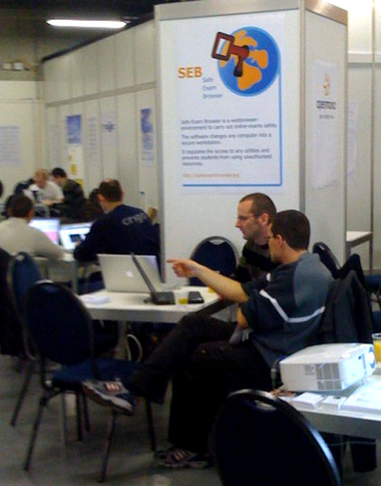
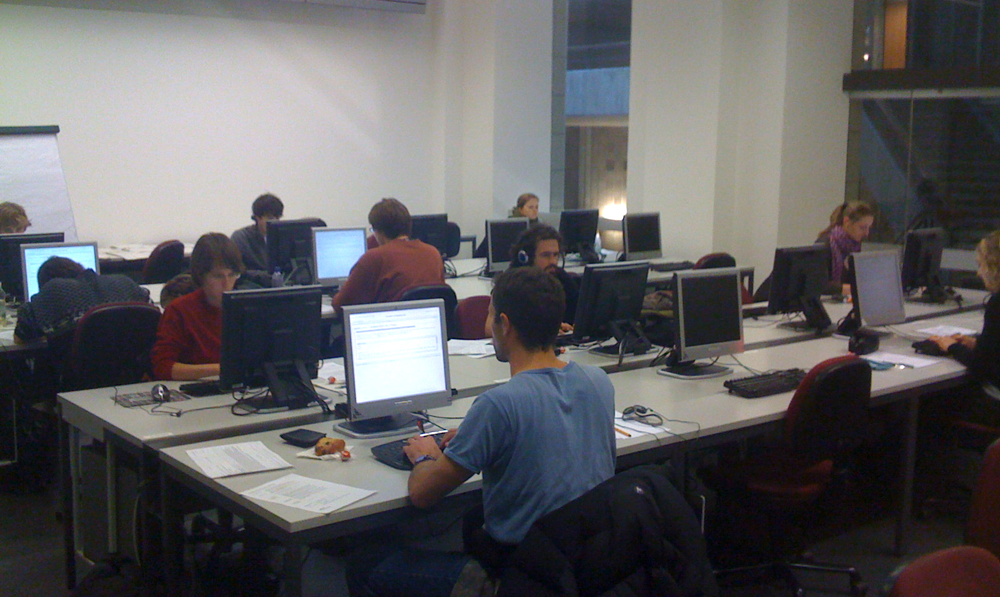

Safe Exam Browser 3.0 für iOS veröffentlicht. Dieses grosse Funktionsupdate unterstützt neu die modernisierte WebKit-Browser-Engine, Zugriff auf Kamera/Mikrofon via das WebRTC-Protokoll auf iOS 14.3, SEB Server und Echtzeit-Überwachung (Live Remote Proctoring). Weitere Neuigkeiten:
Weitere Infos zu allen Neuerungen finden sich in den englischen Release Notes. Das englischsprachige Benutzerhandbuch wird momentan aktualisiert. Es gibt auch ein GitHub-Diskussionsforum für Fragen und Diskussionen zu SEB für iOS.
Safe Exam Browser 3.2.0 für Windows veröffentlicht: Dieses Update bietet Echtzeit-Überwachung mit Jitsi Meet, aktiviert WebRTC für die intergrierte Browser-Engine und behebt Probleme, welche von der Community gemeldet wurden. Bitte lesen Sie die Release Notes für die Liste aller Änderungen.
Safe Exam Browser 2.3.2 für macOS veröffentlicht. Wartungsupdate, welches eine Fehlerbeseitigung enthält: Auf Intel CPU basierten Macs wurden Systemprozesse, welche Elemente einer Benutzeroberfläche im Vordergrund anzeigen zu versuchen, von SEB nicht als Betriebssystemapplikationen erkannt und beendet oder SEB wurde gesperrt (roter Sperrbildschirm angezeigt), falls SEB diese nicht beenden konnte. Nun werden Systemprocesse sowohl auf Intel als auch Apple Silicon basierte Macs korrekt identifiziert.
Weitere Infos zu allen Neuerungen finden sich in den englischen Release Notes.
Safe Exam Browser 2.3.1 für macOS veröffentlicht. Diese Version ist ein Wartungsupdate, welches Fehlerbeseitigungen enthält. Der direkt im Betriebssystem verfügbare Kiosk-Modus Automatic Assessment Configuration (AAC) bzw. kurz macOS Assessment Mode wird nicht mehr standardmässig aktiviert, weil dieser unter macOS 11 Big Sur ein grundlegendes funktionales Problem aufweist. Wir empfehlen, AAC nicht zu benutzen, bis dieses Problem mittels einem macOS Big Sur Update behoben wird.
Weitere Infos zu allen Neuerungen finden sich in den englischen Release Notes.
Safe Exam Browser 2.3 für macOS veröffentlicht. Diese Version ist ein wichtiges Funktionsupdate, welches die Prüfungssicherheit durch Unterstützung des neuen, seit macOS 10.15.4 direkt im Betriebssystem verfügbaren Kiosk-Modus Automatic Assessment Configuration (AAC) bzw. kurz macOS Assessment Mode massiv erhöht. SEB 2.3 bietet auch neue Funktionalitäten verbessert die Bedienbarkeit für Prüfungskandidaten und Prüfungsadministratoren und enthält Fehlerbeseitigungen.
Weitere Infos zu allen Neuerungen finden sich in den englischen Release Notes.
Die SEB-Allianz geht an den Start! Das SEB-Konsortium ist Geschichte. Von 2016-2020 half das erfolgreiche SEB-Konsortium, die Finanzierung des SEB-Open-Source-Projekts sicherzustellen. Aufgrund von Änderungen in den Schweizer Mehrwertsteuerbestimmungen kann das SEB-Konsortium nicht mehr mit einem vernünftigen Verwaltungsaufwand weitergeführt werden und wurde daher zum Jahresende 2020 eingestellt.
Am 1. Januar 2021 starten wir neu mit der SEB-Allianz. Die SEB-Allianz ist das neue Gremium, das sich an der Finanzierung Open-Source-Projekts Safe Exam Browser beteiligen wird. Treten Sie der SEB-Allianz bei und beteiligen sie sich an der Zukunft des Safe Exam Browser Projekts!
Safe Exam Browser 3.1.1 für Windows veröffentlicht: Dieses Update beinhaltet neue Funktionalität für die SEB-Server Integartion mit Moodle und behebt einige Probleme, welche von der Community gemeldet wurden. Bitte lesen Sie die Release Notes für die Liste aller Änderungen.
Safe Exam Browser 3.1.0 für Windows veröffentlicht: Dieses Funktionsupdate beinhaltet grundlegende Unterstützung für den SEB Server, Textsuche für den integrierten Browser und einen ersten Schritt in Richtung Funktionsparität von SEB für alle drei Betriebssysteme (Windows, macOS und iOS). Bitte lesen Sie die Release Notes für die Liste aller Änderungen.
Safe Exam Browser 2.2.2 für macOS veröffentlicht. Diese Version ist ein Wartungsupdate, welches Verbesserungen und Fehlerbeseitigungen enthält:
Weitere Infos zu allen Neuerungen finden sich in den Release Notes.
Wir haben das Video Remote Exams With Safe Exam Browser veröffentlicht, auf unserem neuen SafeExamBrowser YouTube Channel. Das Video demonstriert die neuen Remote Proctoring Funktionen, eingebaut in Safe Exam Browser und SEB Server. Unser Ziel ist es, die Situation mit Prüfungskandidaten in einem Prüfungssaal auf Distanzprüfungen abzubilden: Die Prüfungsaufsicht kann Kandidaten mittels Webcam und Mikrofon in Echtzeit während der Prüfung im Auge behalten. Die Prüfungsaufsicht oder die Dozierenden/Lehrer können auch mittels Live-Video/Audio (oder mittels eingebautem Chat) mit den Kandidaten kommunizieren, beispielsweise für Instruktionen vor Prüfungsbeginn oder bei Problemen während der Prüfung, was auch separat mit einzelnen Kandidaten möglich ist. In zukünftigen Ausbaustufen wird auch eine Live-Ansicht des Bildschirminhaltes der Prüfungsgeräte möglich sein und eine Aufzeichnung über den ganzen Prüfungsverlauf.
KI-/AI-Proctoring-Funktionen erlauben optional die Bewegungen und die Anzahl der sichtbaren Gesichter im Kamera-Stream zu verfolgen. Gesichts-Detektierung und -Verfolgung erfolgt dabei auf dem Prüfungsgerät, nicht in einem Cloud-Dienst. Detektierte Ereignisse werden geloggt, mit einem Symbol im Video-Stream angezeigt und an eine angebundene SEB Server Instanz gesendet.
Die Remote Proctoring Funktionen werden durch eine Integration der Open Source Videokonferenzlösung Jitsi Meet in die SEB Clients sowie den SEB Server ermöglicht. Weil es einfach möglich ist, einen eigenen Jitsi Meet Server zu betreiben (und SEB ebenfalls keine zentralen Cloud-Dienste benutzt), hat man volle Kontrolle über den Datenschutz.
Momentan sind diese Funktionen in Beta-Versionen von SEB für iOS und Entwicklerversionen von SEB Server verfügbar. Remote Proctoring mit SEB ist noch in Entwicklung, wir werden die Verfügbarkeit in SEB-Versionen für macOS and Windows zu einem späteren Zeitpunkt kommunizieren. Wenn Sie die Betaversion von SEB für iOS 2.1.50 mit Unterstützung von SEB Server und Remote Proctoring testen möchten (benötigt ein iPad, iPhone oder iPod Touch mit iOS 11 oder neuer), dann beachten Sie bitte diese Forum-Seite.
Safe Exam Browser 2.1.17 für iOS veröffentlicht. Diese Version ist ein Wartungsupdate, welches mit Standardeinstellungen unter iOS 14 läuft, eine Scroll-Lock-Taste für bessere Bedienbarkeit in einigen Fragetypen bietet und kleinere Fehler behebt.
Das englischsprachige Benutzerhandbuch wird momentan aktualisiert. In unserem Diskussionsforum gibt es einen Abschnitt für Fragen zu SEB für iOS.
Safe Exam Browser 2.2.1 für macOS veröffentlicht. Diese Version ist ein wichtiges Feature-Update, welches die Prüfungssicherheit mittels Blockieren von verbotenen Prozessen erhöht, neue Funktionen und volle Kompatibilität zu erweiterten Integrationen mit Learning Management System wie derjenigen in Moodle 3.9.
Weitere Infos zu allen Neuerungen finden sich in den Release Notes. Das englische Benutzerhandbuch wurde für SEB 2.2.1 aktualisiert und enthält wichtige Hinweise, welche Änderungen in SEB 2.2.1 eventuell Anpassungen von SEB Konfigurationsdateien notwendig machen könnten.
Safe Exam Browser 2.4.1 für Windows ist ein Wartungsupdate, welches verwendet werden kann, wenn die komplett erneuerte, modernere Version SEB 3.0 eine benötigte Funktion noch nicht enthält. In SEB 2.4.1 wurde ein Fehler beseitigt, welcher uns im Zusammenhang mit der erweiterten SEB-Moodle Integration gemeldet wurde (standardmässig verfügbar in Moodle 3.9 und als Plugin für Moodle 3.7 und 3.8).
Weitere Infos zu allen Neuerungen finden sich in den Release Notes.
Safe Exam Browser 3.0.1 für Windows veröffentlicht: Dieses Update behebt ein Problem von SEB 3.0.0 welches vor allem einige Benutzer in BYOD-Szenarien gemeldet haben. Die neue Version sollte verhindern, dass Anti-Malware-Software SEB fälschlicherweise als Malware detektiert (False-Positive-Erkennung durch Heuristik und ähnliche Algorithmen).
SEB 3.0.1 greift standardmässig nicht mehr auf die Registry zu. Das heisst, dass die Ein/Aus-Optionen (z.B. Herunterfahren oder Neustarten) nicht mehr blockiert und die Optionen auf dem Windows Security Screen (erreichbar via Ctrl+Alt+Del) nicht entfernt werden.
SEB verhindert weiterhin den Zugriff auf den TaskManager. Um das aktuelle Verhalten beizubehalten kann die neue Einstellung "Ignore SEB Service" (setting key sebServiceIgnore = false) im Konfigurationstool deaktiviert werden. Wenn man den SEB Windows Service weiterhin benutzt, kann es sein, dass einige Studenten ihre Anti-Malware-Software deaktivieren oder gar deinstallieren müssen, um SEB starten zu können wenn diese Softwares SEB nicht korrekt erkennen und nicht blockieren. Wir haben die Hersteller von Anti-Malware-Applikationen gebeten, die falsche Erkennung von SEB 3.0 zu korrigieren und haben bis jetzt von Avast wie auch Bitdefender eine positive Rückmeldung erhalten. Bitte informieren Sie uns über allfällige andere Anti-Malware-Hersteller, welche SEB blockieren (Produkt Name und Version).
Eine kleine Zahl der rund 130'000 Benutzer, welche bereits Safe Exam Browser 3.0 herunter geladen haben, meldeten uns Probleme beim Starten und nach dem Beenden der Applikation. Wir haben diese Fälle untersucht und es scheint, dass in allen eine Antivirus/Anti-Malware Software diese Probleme verursacht hat. Manche dieser Sicherheitstools haben SEB fälschlicherweise als Schadsoftware identifiziert (falsch positive Erkennung mittels Heuristiken und ähnlichen Algorithmen). Dies hat wahrscheinlich mit den verbesserten Sicherheitsfunktionen in SEB zu tun, wie der konstanten Überwachung der Registry-Einstellungen, welche SEB während der Prüfung anpasst. Die betreffenden Antiviren-Programme blockieren Teile von SEB, wie den SEB Windows Service (Hintergrunddienst). Dies führt dann dazu, dass SEB nicht starten kann oder in manchen Fällen gewisse Registry-Einstellungen nicht mehr zurücksetzen kann (letzteres scheint nur dann aufzutreten, wenn zusätzlich noch der Windows-Aktualisierungs-Prozess läuft, wenn SEB gestartet wurde).
Wir arbeiten an einer Lösung für diese Probleme und haben ausserdem die Hersteller der uns gemeldeten Antiviren-Programme gebeten, die falsch positive Klassifizierung von SEB zu korrigieren. Um solche Probleme zu vermeiden, empfehlen wir momentan SEB 2.4 zu benutzen.
Chrominimum 1.0.0 für Windows: Da SEB 3.0 noch keine WebRTC-Funktionalität unterstützt (z.B. Zugriff auf die Webkamera durch Web-Applikationen), haben wir einen minimalen Browser implementiert, der WebRTC unterstützt und als Drittapplikation in eine SEB-Konfiguration eingebunden werden kann. Chrominimum kann von GitHub heruntergeladen werden.
Safe Exam Browser 3.0.0 für Windows: Die neue Hauptversion von SEB für Windows wurde veröffentlicht. SEB 3.x für Windows wurde komplett überarbeitet und benutzt Chromium als integrierte Browser-Engine. Dies erlaubt eine bessere Integration der Browser-Funktionalität in die SEB Applikation und verbesserte Stabilität, Sicherheit und Geschwindigkeit. Die aktuelle Chromium Browser-Engine garantiert ausserdem sehr gute Kompatibilität mit modernen Web-Applikationen. Nachfolgend eine Liste der wichtigsten neuen Funktionen und Änderungen:
Version 3.0 beinhaltet noch nicht den kompletten Funktionsumfang von SEB 2.x. Weitere Infos finden sich in den Release Notes.
Safe Exam Browser 2.1.16 für iOS veröffentlicht. Diese Version unterstützt Tastaturkürzel auf Hardware-Tastaturen, verbessert die Barrierefreiheit, Sicherheit und MDM-Verteilung/Konfiguration. Die Integrierung in Learning Management Systeme wird erleichtert und verbessert, beispielsweise ist SEB 2.1.16 vollständig kompatibel mit der massiv verbesserten SEB-Moodle Integration in der kommenden Moodle-Version 3.9.
Siehe die englischsprachigen Release Notes für alle Änderungen. Das englischsprachige Benutzerhandbuch wird momentan aktualisiert. In unserem Diskussionsforum gibt es einen Abschnitt für Fragen zu SEB für iOS.
Safe Exam Browser 2.4 für Windows ist das letzte Update mit neuen Funktionen, bevor wir komplett auf SEB 3.x wechseln. Neue Funktionen in SEB 2.4:
Weitere Infos zu allen Neuerungen finden sich in den Release Notes.
Öffentliche Beta-Version von SEB 3.0.0 für Windows: Eine erste Beta-Version der nächsten Hauptversion von SEB für Windows wurde veröffentlicht und kann von GitHub heruntergeladen werden. SEB 3.x für Windows wurde komplett erneuert und benutzt Chromium als integrierte Browser-Engine. Version 3.0 beinhaltet jedoch noch nicht den kompletten Funktionsumfang von SEB 2.x (z.B. keine Additional Resources). Nachfolgend eine Liste der wichtigsten neuen Funktionen und Änderungen:
Bitte beachten Sie, dass Entwicklung und Testing noch nicht abgeschlossen sind. Die Beta-Version ist deshalb unter keinen Umständen für den Einsatz in einem Produktivsystem vorgesehen! Fehler oder Verbesserungsvorschläge können auf GitHub gemeldet werden. Die Veröffentlichung der finalen Version ist im Moment für die erste Woche im Mai 2020 geplant.
Das Safe Exam Browser Konsortium bietet jetzt die neue Platin-Mitgliedschaft an, welche für Organisationen wichtig ist, die individualisierte Versionen von Safe Exam Browser wünschen. Zu den Vorteilen der Platin-Mitgliedschaft gehören das Vorschlagen von SEB-Entwicklungszielen, Mitwirkung beim Definieren der Liste von neuen Funktionalitäten und persönliches Consulting durch die SEB-Entwickler (inklusive für das Erstellen von individualisierten SEB-Versionen). Als Platin-Mitglied haben Sie neu die Möglichkeit, individualisierte SEB-Versionen mit Ihrer Codesignatur zu versehen, und trotzdem alle Sicherheitsfunktionen zu nutzen.
Das SEB-Konsortium ermöglicht und finanziert die nachhaltige Weiterentwicklung und Pflege des Safe Exam Browser Open Source Projektes. Die Stiftung SWITCH (Technologie- und Dienstleistungsplattform der Schweizer Hochschulen) und die ETH Zürich haben das SEB-Konsortium im Jahr 2016 gegründet, welches momentan aus 20 Mitgliedern aus verschiedenen europäischen Ländern, Australien und der USA besteht. Das Konsortium steht weiteren Mitgliedern aus dem Bereich der Bildungsinstitutionen, Unternehmen, Behörden sowie Stiftungen offen. Mit der Beteiligung weiterer Konsortiumsmitglieder und der SEB Open Source Community wird die weitere Zukunft der SEB Open-Source Software sichergestellt.Safe Exam Browser 2.1.4 für macOS veröffentlicht. Diese Version erhöht die Sicherheit in Prüfungen und verbessert die Bedienungsfreundlichkeit, beispielsweise beim Verwenden von zusätzlichen Ressourcen in mehreren Fenstern. Bitte führen Sie ein zeitnahes Update durch, um bestmögliche Sicherheit und Kompatibilität mit neuen macOS-Versionen sicherzustellen. Wie zuvor kommuniziert, unterstützen wir keine älteren SEB-Versionen mehr. Bevor Sie eine Support-Anfrage schreiben oder uns einen Fehler melden, installieren Sie bitte die neuste SEB-Version. Überprüfen Sie dann, ob das Problem auch noch mit der neusten Version nachvollziehbar ist.
Weitere Infos zu allen Neuerungen finden sich in den Release Notes.
Safe Exam Browser 2.1.15 für iOS veröffentlicht. Diese Version läuft mit Standardeinstellungen unter iOS 13 und behebt einige kleinere Fehler:
Siehe die Release Notes für alle Änderungen des vorherigen Feature-Updates 2.1.14. Das englischsprachige Benutzerhandbuch wird momentan aktualisiert. In unserem Diskussionsforum gibt es einen Abschnitt für Fragen zu SEB für iOS.
Safe Exam Browser 2.3 für Windows veröffentlicht. SEB 2.3 bietet neue Funktionen, welche die Sicherheit verbessern und zu besserer Bedienungsfreundlichkeit beitragen.
Bitte beachten Sie unsere neue Update-Strategie: Wir unterstützen nur die neuste SEB-Version und werden die Download-Links für alle älteren Versionen nach einer Übergangsfrist entfernen. Nur mit aktuellen SEB-Versionen können Sie die bestmögliche Sicherheit und Stabilität Ihrer Prüfungsumgebung erzielen. Bevor Sie eine Support-Anfrage schreiben oder uns einen Fehler melden, installieren Sie bitte die neuste SEB-Version. Überprüfen Sie dann, ob das Problem auch noch mit der neusten Version nachvollziehbar ist.
Neu in SEB 2.3:
Siehe die englischen Release Notes für alle neuen Funktionen.
Safe Exam Browser 2.1.14 für iOS veröffentlicht. Trotz des nur kleinen Versionsnummersprungs (bedingt durch die laufende Harmonisierung der SEB Funktionalität und Versionsnummern zwischen den unterstützten Plattformen), beinhaltet diese Version wichtige neue Funktionen und Verbesserungen. Diese erlauben, Web-basierte Prüfungen auf iOS-Geräten mit der höchst möglichen Absicherung durchzuführen. SEB 2.1.14 für iOS bietet fast alle Funktionen der Desktop-Versionen von Safe Exam Browser und sollte voll kompatibel sein mit Prüfungs- und Learning Management Systemen mit bereits eingebauter SEB-Unterstützung. Einige neue Funktionen sind momentan sogar nur in der iOS-Version vorhanden, werden in Zukunft aber auch in der Mac und Windows-Version verfügbar sein.
Neue Funktionalität in SEB 2.1.14:
Siehe die Release Notes für alle Änderungen. Das englischsprachige Benutzerhandbuch wird momentan aktualisiert. In unserem Diskussionsforum gibt es einen Abschnitt für Fragen zu SEB für iOS.
Liste von mit SEB für Windows kompatibler Antivirus/Anti-Malware Software publiziert. In unserem umfangreichen Test haben die meisten Antiviren-Hilfsprogramme korrekt mit SEB zusammengearbeitet. Nur ein Produkt hat überhaupt nicht zusammen mit SEB funktioniert und muss deinstalliert werden, bevor eine mit dem Browser Exam Key abgesicherte Prüfung gestartet wird. Siehe die Liste auf unserer englischsprachigen FAQ-Seite. Falls sie Probleme mit SEB und einer dieser Antivirus/Anti-Malware Software beobachten würden oder andere Produkte erfolgreich mit SEB einsetzen, lassen Sie uns das bitte wissen.
Safe Exam Browser 2.2.3 für Windows veröffentlicht. SEB 2.2.3 für Windows ist ein wichtiges Sicherheitsupdate für SEB 2.2.x und 2.1.8.
BITTE FÜHREN SiE DAS UPDATE AUF DIESE VERSION SO BALD ALS MÖGLICH AUS. WIR WERDEN ALLE ÄLTEREN VERSIONEN IN KÜRZE ENTFERNEN.
Siehe die Release Notes für alle neuen Funktionen.
Das Safe Exam Browser Konsortium ist nun offen für weltweite Mitgliedschaft. Safe Exam Browser (SEB) wird zur Absicherung von Prüfungen benutzt, die von einer Vielzahl von kommerziellen und Open Source Prüfungs- und Learning Management Systemen bereit gestellt werden. SEB ist bereits das Produkt der Wahl für viele Organisationen im Bildungsbereich rund um die Welt und ermöglicht Millionen von fairen und sicheren Prüfungen. Das SEB-Konsortium ermöglicht und finanziert die nachhaltige Weiterentwicklung und Pflege des Safe Exam Browser Open Source Projektes.
Die Stiftung SWITCH (Technologie- und Dienstleistungsplattform der Schweizer Hochschulen) und die ETH Zürich haben im Jahr 2016 das SEB-Konsortium gegründet, welches momentan aus 16 Mitgliedern aus verschiedenen europäischen Ländern besteht. Das Konsortium steht weiteren Mitgliedern aus dem Bereich der Bildungsinstitutionen, Unternehmen, Behörden sowie Stiftungen offen. Mit der Beteiligung weiterer Konsortiumsmitglieder und der SEB Open Source Community wird die weitere Zukunft dieser beeindruckenden Open-Source Software sichergestellt.
Vorschauversion von Safe Exam Browser 2.1.13 für iOS veröffentlicht. Diese Version beinhaltet wichtige SEB-Funktionen, welche bis jetzt in der iOS-Version gefehlt haben. Wenn Sie SEB für iOS in Ihrer Organisation verwenden oder mit Ihrer eigenen Prüfungslösung vertreiben, dann können Sie zur Weiterentwicklung und Verbesserung der SEB Open-Source-Software beitragen, in dem Sie die unten erwähnten, neuen SEB 2.1.13 Funktionen testen, insbesondere deren Kompatibilität mit den Desktop-Versionen von Safe Exam Browser.
Das Testen der Kompatibilität insbesondere dieser Beta-Version mit allen Prüfungssystemen ist besonders wichtig, weil sie neuen, eigenen Code für den Netzwerkverkehr und das Laden von Webseiten benutzt.
Da die SEB-App auf studentischen iOS-Geräten in der Regel automatisch aktualisiert wird, sobald eine neue Version im App Store verfügbar ist, ist es wichtig, dass SEB-Benutzer die Beta-Version testen und uns mögliche Probleme melden, BEVOR die finale Version veröffentlicht wird. Wenn Sie also SEB für iOS in Ihrer Organisation benutzen oder mit Ihrer eigenen Prüfungslösung vertreiben, dann können Sie durch eine Teilnahme am Beta-Testing Probleme vermeiden, wenn die neue Version öffentlich verfügbar wird.
Auf der englischsprachigen Testing-Repository-Seite finden sich alle Informationen über die neue Version und darüber, wie der Zugang zum TestFlight Beta-Testing von SEB beantragt werden kann. In unserem Diskussionsforum gibt es einen Abschnitt für Fragen zu SEB für iOS.
Safe Exam Browser 2.2.2 für Windows veröffentlicht. SEB 2.2.2 ist ein Wartungsupdate für SEB 2.2 und zwei Fehlerkorrekturen für SEB 2.2.1. Wenn Sie den "Browser Exam Key" (Request-Header-Check) einsetzen, um zu überprüfen ob die korrekten Einstellungen und SEB-Version beim Zugriff auf das Prüfungssystem eingesetzt werden, sollten Sie unbedingt auf SEB 2.2.2 aktualisieren.
Siehe das aktualisierte SEB 2.2.2 Benutzerhandbuch (in englisch) und die Release Notes für alle Neuheiten.
Safe Exam Browser 2.1.12 für iOS veröffentlicht. SEB läuft nun unter iOS 12 und nutzt die ganze Displaygrösse aller iPhone X Modelle. Diese Version beinhaltet unter anderem Verbesserungen für die Konfiguration eines SEB-Clients und zum Starten von Prüfungen in SEB. Einige dieser Funktionen werden in Zukunft in den SEB-Versionen für alle Plattformen zur Verfügung stehen. Dies ist insbesondere hilfreich für Entwickler und Administratoren von Prüfungsumgebungen, um Safe Exam Browser besser in diese zu integrieren.
Alle Neuheiten finden sich in den englischen Release Notes.
Safe Exam Browser 2.2.1 für Windows veröffentlicht. SEB 2.2.1 ist ein Update für SEB 2.2 mit einigen neuen Funktionen und vielen Verbesserungen. Ab jetzt sollte Safe Exam Browser 2.2.1 eingesetzt werden, wir werden ältere Versionen zukünftig nicht mehr unterstützen.
Siehe Release Notes (in englisch) für alle Neuheiten.
Safe Exam Browser 2.1.3 für macOS veröffentlicht. Diese Version beinhaltet wichtige Sicherheits- und Stabilitätsverbesserungen, ein zeitnahes Update wird deshalb dringend empfohlen.
Weitere Infos zu allen Neuerungen finden sich in den Release Notes.
Safe Exam Browser 2.2 für Windows veröffentlicht. SEB 2.2 für Windows ist ein umfangreiches Update mit neuen Funktionen und vielen Verbesserungen. Mittels der neuen Funktion Zusätzliche Ressourcen (Additional Resources) können einzelne Webseiten, ganze Websites oder Teile davon, HTML5-Webapplikationen und Dokumente sicher und bequem während einer Prüfung verwendet werden. Diese Ressourcen können entweder auf externen Servern liegen oder in SEB-Konfigurationsdateien eingebettet werden. Im ersten Fall sorgt der verbesserte URL-Filter mit seinen einfachen Filterregeln effektiv dafür, dass nur gewisse Inhalte zugänglich sind und alle anderen gesperrt werden. Im zweiten Fall erlauben in SEB-Konfigurationsdateien eingefügte zusätzliche Ressourcen reine Offline-Prüfungsszenarien. Siehe das SEB 2.2 Benutzerhandbuch (in englisch) und die Release Notes für alle Neuheiten.
Diese Version ersetzt die SEB 2.1.x-Reihe, mit welcher SEB 2.2 kompatibel ist, mit einer wichtigen Ausnahme: Wenn Sie URL-Filterregeln in SEB 2.1.x für Windows erstellt haben, dann müssen Sie diese im SEB 2.2 Konfigurationstool erneut eingeben, gemäss dem neuen Filterregel-Schema. URL-Filterregeln, die mit SEB für macOS erstellt und gespeichert wurden, sind bereits kompatibel mit SEB 2.2 für Windows.
Neu auf der SEB-Website findet sich die Dokumentation für Entwickler, die vor allem das oft nachgefragte Thema der SEB-Integration in Learning Management Systeme (LMS) und andere Prüfungssysteme adressieren.
Wichtiges Update Safe Exam Browser 2.1.8 für Windows veröffentlicht, welches Sicherheit und Stabilität verbessert. Diese SEB-Version führt den "Create new Desktop" Kioskmodus wieder ein, welcher zuverlässig Benachrichtigungen von diversen Applikationen wie manchen Webbrowsern blockiert. Dies wurde wieder möglich, weil das Mauszeiger-Offset-Problem gelöst wurde, welches mit SEB 2.1.5, "Create new desktop" und einem Windows Creators Update auftrat.
Wir empfehlen ein sofortiges Update, falls momentan SEB 2.1.6/2.1.7 benutzt wird. Falls die verwendeten Einstellungen manuell auf den "Disable Explorer Shell" Kioskmodus geändert wurden, können diese wieder auf "Create new Desktop" umgeschaltet werden. Die Liste von nicht zugelassenen Browser-Prozessen, welche von SEB 2.1.7 zu allen Konfigurationsdateien hinzugefügt wurden, können wieder entfernt werden.
Ausserdem blockiert SEB 2.1.8 weitere standardmässig verbotene Prozesse wie einige Screensharing- und Kommunikationstools und korrigiert einen seltenen Fehler, bei dem die Tastenkombinationen Win+Tab und Win+D und "Sticky Keys" funktionierten. Hinweis: Der SEB-Client hat in dieser endgültigen veröffentlichten Fassung die Versionsnummer 2.1.8.1. Falls Sie eine frühere Ausgabe von 2.1.8 installiert haben, dann nehmen Sie jetzt ein Update auf diese Version vor.
Wichtiges Sicherheitsupdate Safe Exam Browser 2.1.7 für Windows veröffentlicht. Diese SEB-Version löst ein Problem mit Chrome und einigen anderen Webbrowsern, welche Benachrichtigungen anzeigen konnten, solange SEB lief. Dieses Sicherheitsproblem wurde für viele SEB-Nutzer durch SEB 2.1.6 ausgelöst. Wir empfehlen ein sofortiges Update, falls momentan SEB 2.1.6 oder der "Disable Explorer Shell" Kioskmodus benutzt wird.
Falls ein sofortiges Update nicht möglich ist, sollte sichergestellt werden, dass Chrome und Chromium-basierte Browsers (zum Beispiel Vivaldi) als auch Firefox beendet werden, bevor SEB gestartet wird. Falls Prüfungen mittels SEB-Link aus anderen Webbrowsern aus gestartet werden, sollte dafür Edge, Internet Explorer oder Opera benutzt werden. Auf zentral verwalteten PCs sollte der Rechner neu gestartet und danach direkt SEB gestartet werden, bevor Studierende an den Prüfungsrechnern Platz nehmen. Bei Verwendung von studentischen Geräten (BYOD) ist dies schwer umzusetzen, dort ist das Update auf SEB 2.1.7 also wirklich die beste Lösung für dieses Problem.
SEB 2.1.7 verbessert ausserdem das Zulassen und Sperren von Prozessen generell, das Blockieren von nicht erlaubten Prozessen ist nun sicherer.
SafeExamBrowser 2.1.11 für iOS ist im App Store verfügbar. SEB ist nun mit iOS 11 kompatibel. Ausserdem wurde eine Sicherheitslücke beseitigt, die auftrat, wenn SEB unter iOS 9.3.5 über einen Link aus Safari oder einer anderen App gestartet wurde.
Safe Exam Browser 2.1.6 für Windows beseitigt ein Problem mit dem Mauscursor, welches durch das kürzliche Windows 10 Creators Update ausgelöst wurde, integriert Unterstützung für Webcam- und Mikrofon-Zugriff, gesteuert durch neue Einstellungsoptionen und verbessert die Kompatibilität mit Konfigurationsdateien, welche mit dem kommenden grossen Release SEB 2.2 erzeugt wurden.
SafeExamBrowser für iOS ist nun im App Store verfügbar. SEB für iOS öffnet einen Webbrowser, der kein Adress- und Suchfeld hat, lädt eine voreingestellte Webseite und sperrt ein iPad (oder ein iPhone oder einen iPod Touch) mit einem Einzelapp-Kioskmodus. Dieser Kioskmodus ist im iOS Betriebssystem eingebaut und bietet deswegen ein hohes Mass an Sicherheit gegen Schummeln und Manipulationsversuche. Studierende können während der Prüfung nicht zu anderen Apps wechseln, auf andere Webseiten zugreifen oder mit anderen Personen kommunizieren. Benachrichtigungen, FaceTime/Mobilanrufe und Bildschirmfotos werden ebenfalls unterbunden. SEB für iOS funktioniert sowohl auf privaten iPads der Studierenden, als auch auf verwalteten iOS-Geräten, welche einer Institution gehören.
SEB für iOS ist kompatibel mit den bestehenden Versionen für macOS und Windows. Dieselben SEB-Konfigurations-Links und -Dateien für das Starten von Prüfungen oder zum Konfigurieren von SEB zur Darstellung der Start/Portalseite des Prüfungssystems einer Institution können verwendet werden. Diese Version enthält einige neue SEB-Funktionen, die momentan nur unter iOS verfügbar sind. Andere Funktionen der macOS-/Windows-Versionen sind darin noch nicht umgesetzt. Ausserdem ist diese erste Version nur in Englisch erhältlich. Bitte überprüfen Sie die Kompatibilität von SEB für iOS Version 2.1.10 mit Ihrem Prüfungssystem.
Das Benutzerhandbuch zu SEB für iOS erläutert alle Funktionen. Zusätzlich haben wir eine erste Version eines Tutorials für Prüfungsadministratoren veröffentlich, welches zu besserem Verständnis beitragen soll, wie SEB für iOS konfiguriert und benutzt werden kann. Ein Abschnitt zeigt auf, wie SEB für iOS zusammen mit der Apple Classroom App benutzt werden kann. Wir werden das Tutorial von Zeit zu Zeit mit weiteren Themen erweitern.
Die erste Version von SafeExamBrowser für iOS wird bald im App Store veröffentlicht werden. Interessierte können jetzt Zugang zu Betaversionen erhalten, wenn sie diese und zukünftige Vorversionen testen und uns dazu Feedback geben wollen. Siehe auch das neue Benutzerhandbuch und Tutorial zu SEB für iOS.
Dank der finanziellen Unterstützung durch das SEB-Konsortium können wir mit Damian Büchel einen weiteren Applikationsentwickler für SEB begrüssen. Damian kümmert sich spezifisch um SEB auf der Windows-Plattform (Desktop und Tablets).
Obwohl SafeExamBrowser und sein Quellcode frei verfügbar ist und zum Download und zur Nutzung keine persönlichen Daten angegeben werden müssen, haben wir einige Nachfragen für eine Datenschutzerklärung zur SEB-Applikation erhalten. Die Tatsache, dass SEB sich nur mit dem Prüfungsserver verbindet, welchen Sie dafür konfiguriert haben, ist generell ein wichtiger Vorteil von SEB verglichen mit kommerziellen, sicheren E-Prüfungslösungen. SEB zu verwenden, ist wahrscheinlich das bestmögliche auf dem Markt verfügbare Konzept hinsichtlich Datenschutz, insbesondere für Organisationen mit strengen Datenschutzregelungen, welche die Daten von Prüfungskandidaten ausschliesslich innerhalb der Organisation verarbeiten dürfen.
Wir haben einen aktualisierten technischen Report über kompetenzorientierte Prüfungen mit virtueller Desktop-Infrastruktur (VDI) veröffentlich (nur englische Version verfügbar). Diese Beschreibung eines generellen Konzeptes für Prüfungen unter Verwendung von VDI und Safe Exam Browser enthält Prozessbeschreibungen zur Planung und Durchführung von Prüfungen, in denen komplexe Windows-Applikationen in einer abgesicherten Umgebung verwendet werden. Checklisten und technische Details zur Konfiguration von VDI für die Verwendung zusammen mit SEB werden ebenfalls behandelt. Wie man Drittapplikationen in Prüfungen verwenden kann, wird auch in einem aktualisierten Abschnitt im SEB-Benutzerhandbuch erläutert.
Das Wartungsupdate Safe Exam Browser 2.1.5 für Windows behebt Fehler bei der Verwendung von bestimmten zugelassenen Drittapplikationen und im SEB Konfigurationstool.
Safe Exam Browser 2.1.4 für Windows veröffentlicht. Dieses Wartungsupdate beinhaltet Usability- und Stabilitätsverbesserungen. Ausserdem wird die automatisierte Verteilung auf verwalteten Rechnern erleichtert, dank Änderungen im SEB-Installer und Verbesserungen bei Verwendung von X.509-Zertifikaten für die Verschlüsselung von SEB-Konfigurationsdateien.
Wir haben unsere Website um die Rubrik Publikationen zum Einsatz von SEB erweitert. Neben technischen Berichten finden sich dort Verweise auf wissenschaftliche Publikationen, welche didaktische, organisatorische und technische Aspekte von computerbasierten Prüfungen abdecken, in welchen Safe Exam Browser eingesetzt wird. Diese Artikel geben mehr Einsicht darüber, wie SEB in verschiedenen Prüfungsszenarien eingesetzt werden kann.
Safe Exam Browser 2.1.2 für macOS beseitigt Probleme, die in der kürzlich veröffentlichten Version SEB 2.1.1 mit nicht-standardmässigen Bildschirm-Einstellungen und beim Starten von SEB mittels Öffnen von bestimmten Konfigurationsdateien auftreten konnten. Ausserdem ist eine Usability-Verbesserung enthalten: Wenn SEB über das Öffnen einer .seb-Konfigurationsdatei oder eines seb(s):// Links gestartet wird, dann wird die Start-URL aus den permanenten Client-Einstellungen nicht mehr zuerst geöffnet, sondern direkt diese neuen Einstellungen. Schlägt das Öffnen der neuen Einstellungen fehl (Ladefehler, Benutzer bricht ab, Entschlüsselung nicht möglich), wird SEB nun beendet, anstatt mit den permanenten Einstellungen weiter zu laufen.
Weitere Infos zu allen Neuerungen in den Release Notes.
Safe Exam Browser 2.1.1 für macOS bietet neue Funktionalität, verbesserte Bedienbarkeit, einige Fehlerbehebungen und beinhaltet mehrere wichtige Verbesserungen in der Absicherung des Prüfungscomputers:
Weitere Infos zu allen Neuerungen in den Release Notes und im momentan nur auf Englisch verfügbaren Handbuch, welches alle SEB-Funktionen behandelt.
Safe Exam Browser 2.1.3 für Windows ermöglicht die Benutzung der Systemeinstellungen für die Konfiguration von Proxy-Servern und beseitigt mehrere Fehler:
Weitere Infos zu allen Neuerungen in den momentan nur auf Englisch verfügbaren Release Notes und im Handbuch, welches alle SEB-Funktionen behandelt.
Safe Exam Browser Konsortium gegründet. Online-Prüfungen gewinnen innerhalb der traditionellen Bildungseinrichtungen zunehmend an Bedeutung. Darüber hinaus sind sie essentiell für die neuen, vollständig online angebotenen Lernangebote wie MOOCs (Massive Open Online Courses). Um Online-Prüfungen abgesichert durchführen zu können, sind neben geeigneten organisatorischen Vorkehrungen die passenden Software-Werkzeuge notwendig. Der Safe Exam Browser (SEB) ist ein solches Produkt.
SEB wird weltweit eingesetzt und setzt Standards hinsichtlich Qualität, Funktionalität und Sicherheit. Das Open Source Projekt wird von einer virilen Community getragen, die viel zur Praxistauglichkeit und zum großen Einsatzspektrum der Software beiträgt. An der ETH Zürich wird der Safe Exam Browser seit Jahren weiterentwickelt und in den unterschiedlichsten Online-Prüfungsszenarien eingesetzt.
Die Stiftung SWITCH (Technologie- und Dienstleistungsplattform der Schweizer Hochschulen) und die ETH Zürich haben das SEB-Konsortium mit dem Ziel gegründet, die Pflege und funktionale Weiterentwicklung des SEB-Browsers nachhaltig zu finanzieren. Das Konsortium steht weiteren Mitgliedern aus dem Bereich der Bildungsinstitutionen, Unternehmen, Behörden sowie Stiftungen offen. Mit der Beteiligung weiterer Konsortiumsmitglieder und der SEB Open Source Community wird die weitere Zukunft dieser beeindruckenden Open-Source Software sichergestellt.
Safe Exam Browser 2.1.2 für Windows unterstützt die native HTML5 Vollbildanzeige, Hardwarebeschleunigung im Browser und beseitigt einige kleinere Probleme.
Weitere Infos zu allen Neuerungen in den momentan nur auf Englisch verfügbaren Release Notes und im Handbuch, welches alle SEB-Funktionen behandelt.
Safe Exam Browser wurde an der OEB 2015 präsentiert. Die Veranstaltung, zuvor als Online Educa Berlin bekannt, ist eine globale, englischsprachige Cross-Sektor Konferenz zu Technologie-unterstütztem Lernen und Unterrichten mit über 2'300 Teilnehmenden aus 100 Ländern und 70 Sessions in verschiedenen Formaten. Die Discovery Demo mit dem Titel "Safe Exam Browser, the Modular Freeware Solution for Secure E-Assessment" hatte folgenden Inhalt: "Wenn Sie bereit sind, Papier und Stift komplett durch elektronische Geräte zu ersetzen, dann wird Ihnen diese Demo aufzeigen, wie SEB Online-Prüfungen selbst auf privaten Geräten der Studierenden (BYOD) absichern kann. Erfahren Sie, wie SEB auf Windows-Tablets läuft und wie elektronische Stifte in Freihand-Zeichnungen in Moodle-Prüfungen benutzt werden können." Siehe auch die Folien der Präsentation für einige der diskutierten Themen.
Safe Exam Browser 2.1.1 für Windows ist kompatibel mit Windows 10, enthält Verbesserungen für den Einsatz auf Tablets mit Windows 8.1/10 und erhöht die generelle Stabilität:
Weitere Infos zu allen Neuerungen in den momentan nur auf Englisch verfügbaren Release Notes und im Handbuch, das nun alle SEB-Funktionen behandelt.
Safe Exam Browser 2.1 für macOS bietet neue Funktionalität, verbesserte Bedienbarkeit und viele Verbesserungen in der Absicherung des Prüfungscomputers:
Weitere Infos zu allen Neuerungen in den momentan nur auf Englisch verfügbaren Release Notes.
Safe Exam Browser wurde am Inspera Høstseminar 2015 präsentiert, welches am 24. September 24 in Oslo, Norwegen stattfand. Am Seminar nahmen E-Assessment-Spezialisten und -Anwender aus Norwegen, Schweden, Dänemark, Grossbritannien und weiteren Ländern teil. Der Anlass zeigte die schnelle Verbreitung von Prüfungen, die auf Computern abgenommen werden, im Bildungsbereich dieser Ländern auf. Die Präsentation (auf Englisch) beinhaltet interessante News zu SEB und Details zu der zukünftigen Roadmap, ausserdem eine Vorstellung des SEB-Konsortiums. Wir erläutern darin ausserdem, wie kompetenzorientierte Prüfungen mit Drittapplikationen an der ETH Zurich durchgeführt werden, unter Verwendung von SEB zusammen mit virtueller Desktop-Infrastruktur (VDI).
Safe Exam Browser 2.1 für Windows enthält neue Funktionen und verbessert Benutzerfreundlichkeit, Stabilität und Sicherheit:
Weitere Infos zu allen Neuerungen in den momentan nur auf Englisch verfügbaren Release Notes und im aktualisierten Handbuch, das nun alle SEB 2.1 Funktionen behandelt.
Das SEB-Projekt wechselt vom Open-Source-Hoster SourceForge zu GitHub. Leider gab es in den letzten Monaten vermehrt Fälle, in denen die Projektressourcen wie diese Website, die Source-Code-Repositories, SEB-Downloads und die Diskussionsforen nicht mehr erreichbar waren, der letzte derartige Serverausfall fand gerade in den letzten 7 Tagen statt. Wir werden die Projektressourcen nach und nach auf die neue Infrastruktur verschieben, begonnen haben wir mit der Website und den Repositories. Bis auf weiteres sollte es keine signifikanten Änderungen für die Nutzer unserer Website geben.
Safe Exam Browser 2.0.3 verbesert die Zuverlässigkeit, ermöglicht Kontrolle über den Einsatz von Flash, Java und JavaScript und beseitigt Probleme mit Flash und SEBs Kiosk-Modis. Weitere Infos in den momentan nur in Englisch verfügbaren Release Notes.
Safe Exam Browser 2.0 für macOS ist eine komplett überarbeitete Version mit neuer Funktionalität, massiv verbesserter Bedienbarkeit und höherer Sicherheit. Einige der neuen Funktionen:
Weitere Infos in den Release Notes.
Safe Exam Browser 2.0.2 beinhaltet wichtige Fehlerkorrekturen für verbeserte Stabilität und neue Funktionalität wie eine Browser-Log-Datei. Weitere Infos in den momentan nur in Englisch verfügbaren Release Notes.
Safe Exam Browser 2.0.1 beinhaltet eine neue Version des eingebetteten Browsers, einige Fehlerkorrekturen und ermöglicht das Löschen der Browser-Session-Daten beim Beenden. Weitere Infos in den momentan nur in Englisch verfügbaren Release Notes.
Die finale Version von Safe Exam Browser 2.0 ist da! SEB 2.0 ist eine komplett überarbeitete SEB-Version für Windows 7 und 8, vollgepackt mit neuen Funktionalitäten und einer drastisch verbesserten Usability. Gerne würden wir über Erfahrungen mit der neuen SEB-Version im SEB-Forum lesen, insbesondere auch beim Einsatz auf studentischen Rechnern. SEB 2.0 für macOS ist auf dem Weg und soll im Laufe dieses Jahres veröffentlich werden, die stabile Vorschauversion ist bereits kompatibel mit dem finalen Release für Windows.
In der stabilen Vorschauversion SEB for macOS 2.0pre3 wurde das Format der .seb Konfigurationsdateien angepasst, um die Kompatibiliät mit SEB 2.0 RC Windows sicherzustellen. Dieselben .seb Dateien können für das Starten von Prüfungen auf Windows und macOS Prüfungsrechnern benutzt werden. Die Browser Exam Key Authentifizierung zum Sicherstellen, dass die korrekten Prüfungseinstellungen benutzt werden, ist nun ebenfalls kompatibel mit der Release Candidate Version von SEB 2.0 für Windows.
Safe Exam Browser 2.0 RC für Windows wurde veröffentlicht. Diese Release Candidate Version von SEB 2.0 ist eine komplett neu geschriebene, moderne .NET Applikation, mit neuer Funktionalität, massiv verbesserter Bedienbarkeit und höherer Stabilität.
Safe Exam Browser wurde an der LEARNTEC, der internationalen Fachmesse und Kongress für Lernen mit IT präsentiert, die vom 4. bis 6. Februar 2014 in Karlsruhe, Deutschland stattfand.
Safe Exam Browser wurde an der EDUCAUSE Annual Conference 2013 in Anaheim, USA vorgestellt. Die Folien der Präsentation mit dem Titel "E-Assessment Challenges: How to conduct secure e-exams with open source solutions and BYOD" sind elektronisch verfügbar.
SEB wurde an der DeLFI 2013 im Rahmen der interdisziplinären Fachtagung "Interaktive Vielfalt" in Bremen, Deutschland vorgestellt. Das Text und Bildmaterial der Poster-Session mit dem Titel "Kompetenzorientiertes Prüfen mit virtueller Desktop-Infrastruktur und Safe Exam Browser" ist auch digital verfügbar. Ausserdem haben wir eine technische Beschreibung eines generellen Konzeptes für Prüfungen mit Verwendung von VDI und Safe Exam Browser veröffentlich.
In den nächsten Monaten werden wir Safe Exam Browser an den folgenden Konferenzen präsentieren:
9. September: DeLFI 2013 im Rahmen der interdisziplinären Fachtagung "Interaktive Vielfalt" in Bremen, Deutschland. Poster-Session und Live-Demonstration mit dem Titel "Kompetenzorientiertes Prüfen mit virtueller Desktop-Infrastruktur und Safe Exam Browser".
18. Oktober: EDUCAUSE 2013 in Anaheim, USA. Präsentation und Webcast mit dem Titel "E-Assessment Challenges: How to conduct secure e-exams with open source solutions and BYOD".
Neue Bugfix-Version von SEB Windows 1.9.1 Final Release behebt einen Fehler in der XULRunner-Browserkomponente. Der User Agent String in der Datei "config.json" wurde von "SEB" auf "Mozilla/5.0 (Windows NT 6.1; rv:19.0) Gecko/20100101 Firefox/19.0 SEB" geändert, da einige Webseiten ihn überprüfen und reklamierten.
Mit Safe Exam Browser 2.0 wird eine individuelle Konfiguration pro Prüfung auf einfache Weise möglich, die mit starker Verschlüsselung vor Manipulationen gesichert ist. Dank einer neuen Authentifizierungsmethode ist es möglich, in Prüfungssystemen sicherzustellen, dass nur bestimmte, unveränderte SEB-Versionen mit den korrekten Sicherheitseinstellungen für die Prüfung verwendet werden. Dies ermöglicht sicheres Prüfen insbesondere auch auf nicht von der Hochschule verwalteten, privaten studentischen Rechnern.
Die zweite Vorschau-Version SEB for macOS 2.0pre2 bietet folgende neue Funktionen:
Diese Vorschau auf die Version 2.0 von Safe Exam Browser beinhaltet die Einstellmöglichkeiten für alle Funktionalitäten des endgültigen Releases (siehe die ausführliche Dokumentation, momentan nur in Englisch), einige Funktionen werden aber erst nach gründlichen Tests in nachfolgenden Versionen freigeschaltet. Bitte testen Sie die Vorschauversion und teilen uns Ihre Erfahrungen mit. Diese Version läuft nur unter OS X 10.7 und 10.8. Weitere Informationen (in Englisch).
An der ETH Zürich fand der ganztägige Workshop zu Online Assessment using the Safe Exam Browser statt.
Der Workshop richtete sich an die Schweizer eduhub- und internationale e-Learning-Community, an Online-Prüfungen interessierte Dozierende sowie an Mitarbeitende der E-Learning Supportzentren oder der Informatikdienstleister der Hochschulen. An zwei parallelen Tracks wurden Online-Prüfungen einerseits aus technischem Fokus, andererseits hinsichtlich Prüfungsmethodologie und organisatorischen Aspekten diskutiert. Die Veranstaltung zeigte das starke Interesse an SEB und Online-Prüfungen und wir erhielten ein durchgehend positives Echo.
Die Slides der meisten Sessions sind elektronisch verfügbar.
Anlässlich des nahenden Releases für die Version 2.0 von Safe Exam Browser möchten wir Informationen zur zukünftigen Betriebssystem-Unterstützung veröffentlichen:
Durch die Beschränkung auf aktuelle Betriebssystemversionen können unsere Ressourcen für Weiterentwicklung und Testing (das wir in letzter Zeit deutlich intensiviert haben) effizienter eingesetzt werden. Ausserdem können wir so in SEB 2.0 und künftigen Versionen Technologien der aktuellen Betriebsysteme einsetzen. Fragen und Anregungen zur Betriebssystem-Unterstützung können in unserem Forum formuliert und diskutiert werden.
Neue Final-Release-Version SEB Windows 1.9.1 beinhaltet zahlreiche Verbesserungen gegenüber den bisherigen Versionen:
Nach einer umfangreichen Testphase stellen wir hiermit das Final Release von Version 1.9.1 zur Verfügung, welches (gegenüber dem 1.9.1 Beta-Release) bei der Browserkomponente XulRunner noch einige kleinere Verbesserungen (z.B. im Bereich Popup-Fenster) aufweist.
SEB wurde an den eduhub days 2013 präsentiert. Die elektronische Poster-Session illustrierte, wie der neue Safe Exam Browser 2.0 BYOD für Prüfungen ermöglicht und zeigt ein mögliches Szenario, wie SEB auf den eigenen Rechnern der Studenten benutzt werden kann.
Safe Exam Browser 2.0 ermöglicht sichere Prüfungen auf nicht von der Hochschule verwalteten, privaten studentischen Rechnern, erleichtert die Konfiguration auch in zentral verwalteten Prüfungsumgebungen und wird bis Ende des Jahres 2013 für beide Platformen Windows und macOS veröffentlicht. Die erste öffentliche Vorschau-Version SEB for macOS 2.0pre1 bietet folgende neue Funktionen:
Diese Vorschau auf die Version 2.0 von Safe Exam Browser beinhaltet noch nicht alle Funktionalitäten des endgültigen Releases. Bitte testen Sie die Vorschauversion und teilen uns Ihre Erfahrungen mit. Diese Version läuft nur unter OS X 10.7 und 10.8. Weitere Informationen (in Englisch).
Neue öffentliche Beta-Version SEB Windows 1.9.1 beinhaltet zahlreiche Verbesserungen gegenüber den bisherigen Versionen:
Da die Tests sehr umfangreich und noch nicht ganz abgeschlossen sind, stellen wir hiermit eine Beta-Version zur Verfügung, die von interessierten Anwendern getestet werden kann. Das endgültige Release ist für Mitte Januar geplant.
SEB wurde an der Online-Educa 2012 in Berlin vorgestellt. Die Präsentation an der 18. internationalen Konferenz für Technologie-unterstützes Lernen & Lehren, bei der es sich laut Veranstalter um "die weltweit grösste E-Learning-Konferenz für den privatwirtschaftlichen, Bildungs- und behördlichen Sektor" handelt und die Veröffentlichung im "Book of Abstracts" mit dem Titel "The Safe Exam Browser: Innovative Open Source Software for Online Examinations" hat den internationalen Bekanntheitsgrad von SEB gesteigert.
Veröffentlichung eines Patches, mit welchem der Prüfungsmodus in Moodle 2.3.x wieder korrekt mit Safe Exam Browser funktioniert, d.h. alle Navigationslinks für andere Bereiche des LMS werden während der Prüfung ausgeblendet. In Moodle 2.4 wird die Korrektur integriert sein.
Neue öffentliche Beta-Version SEB Windows 1.9.0 beinhaltet zahlreiche Verbesserungen gegenüber den bisherigen Versionen:
Da die Tests sehr umfangreich sind und Nachfrage nach einem verbesserten Installer besteht, stellen wir hiermit eine Beta-Version zur Verfügung, die von interessierten Anwendern getestet werden kann. Das endgültige Release ist für später geplant.
Safe Exam Browser wurde an der Jahrestagung der Gesellschaft für Medien in der Wissenschaft GMW 2012 an der TU Wien vorgestellt.
Die Firma Questionmark hat Questionmark Secure for Mac im Apple Mac App Store veröffentlicht.
Questionmark Secure ist ein abgesicherter Browser, der auf Safe Exam Browser für macOS basiert. Er wird zusammen mit Questionmarks Prüfungslösungen Questionmark OnDemand oder Questionmark Perception benutzt. Questionmark OnDemand/Perception und Questionmark Secure sind dafür ausgelegt, zusammen eine sichere Umgebung für Online-Prüfungen bereitzustellen. Dabei werden Risiken für die Validität der Resultate von beaufsichtigten Prüfungen minimiert.
Mit dieser Zusammenarbeit hilft die Technologie von Safe Exam Browser die Sicherheit von Online-Prüfungen und -Tests zu verbessern, die weltweit bei Firmen, staatlichen Organisationen und Bildungsinstitutionen mit Questionmarks Assessment-Lösungen durchgeführt werden.
SEB Windows 1.8.2 ist gemäss Tests kompatibel auch zum Desktop-Modus des kommenden Betriebssystems Windows 8, welches am 26. Oktober offiziell erscheinen soll. Die Tests erfolgten unter Windows 8 RC (Release Candidate).
SEB MacOSX 1.5.2 ist nun auch im Mac App Store erhältlich.
SEB Windows 1.8.2 behebt einen Programmfehler: Neuladen / Wiederauffrischen der aktuellen Seite im Browserfenster durch Druck auf die F5-Taste funktionierte nicht. Jetzt ist es möglich, sofern man F5 als Taste zulässt. Die neue Standardeinstellung für die F5-Taste ist deshalb "enabled" (= "aktiviert").
SEB Windows 1.8.1 behebt zwei Programmfehler:
SEB MacOSX 1.5 unterstützt zusätzliche Browserfenster und verbessert die Integrität der Prüfungsumgebung, indem alle SEB-Fenster auf eine höhere Ebene über die Fenster anderer Applikationen verschoben werden, andere Applikationen besser daran gehindert werden, Hinweisfenster zu öffnen, sich zu aktivieren und in den Vordergrund zu schalten. Neue Sicherheitsfunktionen wurden eingebaut, so wie das Löschen der Zwischenablage, optionales Unterbinden des Rückwärts- und Vorwärtssurfens, Ausschalten von möglichen Sicherheitslücken in Flash-Inhalten sowie neue Einstellmöglichkeiten zum Öffnen oder Blockieren von Links in neuen Browserfenstern, ausserdem eine Erleichterung des Uploads von Dateien, die in Drittapplikationen bearbeitet wurden.
SEB Windows 1.8 erleichtert die Konfiguration für den Dozenten. Es ist jetzt möglich, die Konfiguration in einem neuen GUI-Editor namens SebWindowsConfig.exe per Mausklick vorzunehmen, ohne die Initialisierungsdateien SebStarter.ini und MsgHook.ini direkt zu bearbeiten. Das Dateiformat dieser ini-Dateien ist vereinfacht worden und jetzt besser menschen-lesbar. Alternativ zur Vollversion von SEB (Installation via .msi-Datei) ist auch eine klassische portable Variante (Kopieren einer zip-Datei ohne Installation) mit geringerem Funktionsumfang erstellbar.
Im Workshop Safe Exam Browser, der an der ETH Zürich stattfand, standen technische Fragestellungen beim Einsatz von SEB im Vordergrund, so wie die Konfiguration und das Deployment. Der mögliche Einsatz von SEB auf nicht zentral gemanagten Rechnern (beispielsweise studentische Notebooks) und dessen Herausforderungen in der Praxis wurde diskutiert. Ein konfigurierbarer und leicht verteilbarer SEB-Prüfungsclient auf Linux-Basis wurde vorgestellt und es wurde ausführlich über die geplante Weiterentwicklung von SEB und Feature-Requests der Community gesprochen.
In SEB MacOSX 1.4.1 werden zwei unter OS X 10.7.2 Lion auftretende Fehler korrigiert.
SEB MacOSX 1.4 erleichtert die Verteilung der Applikation inklusive einer individuellen Konfiguration. Die angepassten Einstellungen können in das Programm-Bundle geschrieben werden. Danach kann das so modifizierte Programm auf alle Prüfungsrechner verteilt werden und startet gleich mit der richtigen Konfiguration (Start-URL, Passwörter usw.) auf.
SEB Windows 1.7 erleichtert die Konfiguration und Verteilung für den Dozenten. Es ist jetzt möglich, die Konfigurationsdateien vor statt nach der Installation zu modifizieren, so dass die Studenten SEB direkt installieren können, ohne noch zusätzliche Konfigurationsdateien nachträglich zu installieren. Auch eine Administrative Installation via Netzwerk ist jetzt möglich. Herunterladen als zip-Datei, wie in früheren SEB-Versionen bis 1.4.1.
Safe Exam Browser 1.3.1 für macOS kann nun von dieser Website und auch aus dem Mac App Store herunter geladen werden. Diese Version bietet verbesserte Kompatibilität mit dem in Kürze erwarteten OS X 10.7 Lion.
Die SEB-News können nun auch als RSS-Feed in englischer Sprache abonniert werden. Dies ist insbesondere auch als Benachrichtigung über neue Programmversionen praktisch.
SEB Windows 1.6.1 vereinfacht die Konfiguration. Die Ini-Dateien und Log-Dateien befinden sich jetzt im Programmdaten-Verzeichnis (Windows 7) bzw. im gemeinsamen Anwendungsdaten-Verzeichnis (Windows XP). Siehe Benutzerdokumentation.
Die neusten Versionen von SEB für Windows und macOS erkennen, ob sie in einer virtuellen oder "nativen" Umgebung gestartet wurden und verweigern notfalls den Betrieb. Der VM-Detektor erhöht die Hürde für Betrugsversuche in nicht gemanagten Umgebungen.
SEB Windows 1.6 ist mehrsprachig (Deutsch, Englisch, Französisch bei Menüs und Fehlermeldungen), basierend auf der Standard-Eingabesprache des aktuellen Benutzers und beinhaltet weitere Verbesserungen in der Usability, den erwähnten VM-Detektor und Verbesserungen beim eingebauten XULRunner-Browser.
SEB MacOSX 1.3 bietet neben dem VM-Detektor verbesserte Kompatibilität mit OS X 10.7 Lion.
Safe Exam Browser 1.2.1 ist nun auch im Mac App Store, dem Online-Shop von Apple für Mac-Software, erhältlich. Mac-User können SEB dort kostenlos herunterladen und automatisch installieren lassen, sofern sie ein aktuelles macOS benutzen und eine Apple-ID besitzen. Zukünftige Updates erfolgen dann bequem über den Mac App Store. SEB MacOSX ist aber natürlich weiterhin auch über diese Website erhältlich.
In SEB MacOSX 1.2 kann Download/Upload erlaubt werden und heruntergeladene Dateien werden wahlweise automatisch geöffnet. Dies ist bei der Benutzung von zusätzlichen Programmen in einem separaten, verwalteten macOS Benutzerkonto während einer Prüfung sinnvoll.
SEB Windows 1.5.1 erleichtert die SEB-Installation, indem am Ende der Installation der Windows-Dienst automatisch startet (kein Neustart des Rechners und kein manueller Start des Windows-Dienstes als Administrator mehr erforderlich).
SEB MacOSX 1.1 besitzt ein neues Einstellungen-Fenster mit Panes/Tabs für zusätzliche Einstellungen und erlaubt nun, einzelne Programme parallel mit SEB während Prüfungen zu verwenden.
Die Benutzerdokumentation und weitere Informationen zu SEB für Windows und macOS auf der SEB-Website sind nun komplett auf Deutsch übersetzt und wurden ergänzt.
SEB Windows 1.5 wurde veröffentlicht. Wichtigste Neuerung ist eine neue, zusätzliche Windows-Dienst-Komponente, die es ermöglicht, auch unter Windows 7 erfolgreich den Task Manager etc. zu unterdrücken.
Der Quellcode für SEB MacOSX wurde veröffentlicht. Im Developer Manual findet sich eine Beschreibung der Architektur vom Safe Exam Browser für Mac OS X, wie man den Quellcode von SEB und des WebKits laden, die Komponenten linken und SEB kompilieren kann. Ausserdem wie SEB MacOSX in weitere Sprachen lokalisiert werden kann.
In SEB MacOSX 1.0.2 wurde die französische Lokalisierung hinzugefügt. Hinweis-Fenster (inklusive Browser-Fehlermeldungen), Texte und und Schaltflächen im Einstellungen-Fenster (inklusive den Tool Tips) werden in Französisch angezeigt, wenn SEB auf einem auf Französisch eingestellten Mac OS X gestartet wird.
SEB wurde an den eduhub days 2011 in Lugano präsentiert. Das nationale Treffen von e-Learning-Spezialisten, Supportzentren-Verantworlichen und Mitgliedern der Schweizer e-Learning-Community stellte eine ideale Plattform dar, um mit Fachleuten bestehende und zukünftige Szenarien zum Einsatz von SEB an den jeweiligen Institutionen zu diskutieren. Wir haben ausserdem zukünftige Funktionalitäten von SEB zur Diskussion gestellt und erhielten so Feedback von professionellen Benutzern zur Weiterentwicklung von SEB.
SEB wurde am Workshop E-Assessment an der ETH Zurich präsentiert. In einem Tutorial wurde gezeigt, wie SEB für sichere Online-Prüfungen benutzt wird. Ausserdem wurden die im Projekt SEB2012 geplanten Erweiterungen vorgestellt, diskutiert und Fragen aus der Community beantwortet.
SEB Version 1.3.4 und SEB Version 1.4.1 beseitigen ein mögliches Problem mit Schreibrechten des Log-Files. Weil diese Funktionalität sowohl in der Portable Firefox Version 1.3.3 und der XULRunner Version 1.4 vorhanden war, wurden beide Versionen mit der neuen fehlerbereinigten Version ersetzt.
Die neue SEB Version 1.4 basiert auf XULRunner anstatt Portable Firefox.
In SEB MacOSX 1.0.2 wurde die deutsche Lokalisierung hinzugefügt. Hinweis-Fenster (inklusive Browser-Fehlermeldungen), Texte und und Schaltflächen im Einstellungen-Fenster (inklusive den Tool Tips) werden in Deutsch angezeigt, wenn SEB auf einem auf Deutsch eingestellten Mac OS X gestartet wird.
Bei der neuen SEB Version 1.3.3 wurde die Möglichkeit der Erstellung von Logfiles hinzugefügt (Parameter LOG_FILE in Seb.ini setzen).
Die Veröffentlichung der stabilen Version SEB MacOSX 1.0 bringt massive Verbesserungen bei Sicherheit und Bedienungsfreundlichkeit.
Die Struktur der SEB-Website wurde angepasst, um den Zugriff auf Informationen für beide Systemarchitekturen, in denen SEB angeboten wird, zu verbessern. Die Dokumentation für die Windows- und die macOS Version ist nun auf gleicher Stufe zugänglich. Das visuelle Erscheinungsbild und die Navigation wurde ebenfalls verbessert. Der SEB Demofilm kann nun im MP4- oder Flash-Format geschaut werden.
Der erste Kandidat RC 1.0 für die stabile Version 1 von SEB MacOSX wurde veröffentlicht.
SEB wurde an der der GMW'10 in Zurich präsentiert. Der jährliche Kongress der Gesellschaft für Medien in der Wissenschaft (GMW) reflektierte über Digitale Medien für Lehre und Forschung.
SEB Version 1.3.2 behebt ein Problem, das beim Aufstarten von Version 1.3 auftrat.
Die erste Beta-Version von SEB MacOSX wurde veröffentlicht.
Nach intensiven Abklärungen hat sich herausgestellt, dass der XULRunner unter Mac OS X nicht unter Beibehaltung des Kiosk-Modus in SEB eingebettet werden kann. Es wurde deshalb beschlossen, das WebKit Browser-System für SEB unter Mac OS X einzusetzen anstatt XULRunner/Mozilla Gecko. Eine erste Beta-Version von SEB für Mac OS X wird bald veröffentlicht.
Die neue SEB Version 1.3 unterstützt auch Windows 7.
Safe Exam Browser wurde am Netzwerk E-Learning an der Zürcher Fachhochschule präsentiert.
Safe Exam Browser wurde an der OpenExpo 2010 in Bern präsentiert.
Die Benutzer-Dokumentation wurde verbessert, vor allem die nicht ganz eindeutige Erläuterung der Einstellung der Tastenkombinationen zum Verlassen von SEB. Eine neue Tabelle zeigt, wie die Funktionstasten für das Verlassen von SEB in der Datei MsgHook.ini definiert werden.
Daniel Schneider ergänzt das SEB-Team. Er ist primär für die Portierung von SEB auf Mac OS X zuständig.
Dirk Bauer ist neues Mitglied im SEB-Team, vor allem zuständig für die Weiterentwicklung von SEB und die Portierung auf Windows 7.
Das AAA/Switch-Projekt für die Weiterentwicklung von Safe Exam Browser startet.
Safe Exam Browser zusammen mit Moodle wurde am eLearningForum an der Zürcher Universität der angewandten Wissenschaften (ZHAW) präsentiert.
Safe Exam Browser wurde an der Open Expo Bern präsentiert.

Safe Exam Browser wurde von Thomas Korner der Moodle Community an der Moodlemoot 2009 in Bamberg mit positivem Echo vorgestellt.
Die Präsentation ist (nach Registrierung) auf moodle.de zugänglich.
Safe Exam Browser wurde bislang mehr als 1000-mal heruntergeladen.
Das Safe Exam Browser Projekt wird dem ILIAS Forum an der Learntec 2009 in Karlsruhe am 4. Februar beiwohnen.
Die erste Prüfung mit SEB wurde in den Computing Labs an der ETH Zürich erfolgreich durchgeführt.

Erweiterungen zur Anbindung von SEB an die Learning-Management-Systeme Moodle und ILIAS sind nun verfügbar.